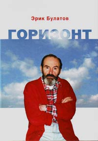

Книга посвящена творчеству русского художника, одного из основоположников соц-арта, Эрика Булатова (р. 1933). Маргарита Тупицына, доктор искусствоведения, куратор и критик, на примере конкретных работ Булатова прослеживает эволюцию его творческой мысли, отмечая важнейшие вехи, преломления его художественного взгляда, а также отмечает ее цикличность. Издание приурочено к выставке «Эрик Булатов. ЖИВУ – ВИЖУ» в ЦВЗ «Манеж» (9 сентября – 8 октября 2014).

"На самом деле эта книга не задумывалась как некое целое. Тексты писались в разные годы исключительно из потребности выразить максимально ясно и точно то, что мне представлялось важным понять самому". Конечно, за 50 лет работы мои взгляды эволюционировали, но сейчас видно, что это было движение в одном направлении, это мой путь, и тексты отмечают его этапы, они как станции на пути. Это и сделало возможным собрать их в одну книгу.